PENAMBANGAN DATA
Statistik Deskriptif
Statistik deskriptif adalah salah satu bagian dari ilmu statistika yang berhubungan dengan aktivitas penghimpunan, penataan, peringkasan dan penyajian data dengan harapan agar data lebih bermakna, mudah dibaca dan mudah dipahami oleh pengguna data. Statistik deskriptif hanya sebatas memberikan deskripsi atau gambaran umum tentang karakteristik objek yang diteliti tanpa maksud untuk melakukan generalisasi sampel terhadap populasi.
Kegiatan dalam statistik deskriptif meliputi pengumpulan, pengelompokan dan pengolahan data yang selanjutnya akan menghasilkan ukuran-ukuran statistik seperti frekuensi, pemusatan data, penyebaran data, kecenderungan suatu gugus data dan lain-lain. Selain itu, agar data lebih mudah dibaca dan dipahami maka data dapat diringkas dalam bentuk tabulasi atau disajikan dalam bentuk grafik atau diagram, beberapa yang akan kita bahas yaitu :
-
Rata-rata
-
Median
-
Modus
-
Variansi
-
Standar Deviasi
-
Range
-
Quartil
-
Skewness
## 1. Rata - rata
Rata-rata adalah nilai yang mewakili sekelompok data. Rata-rata diperoleh dari penjumlahan seluruh nilai data dibagi dengan banyaknya data.
## 2. Median
Untuk data miring (asimetris), ukuran pusat data yang lebih baik adalah median, yang merupakan nilai tengah dalam satu set nilai data yang diurutkan. Ini adalah nilai yang memisahkan separuh data yang lebih tinggi dari data tersebut dan sebagian data yang lebih rendah dari data tersebut. Dalam probabilitas dan statistik, median umumnya berlaku untuk data numerik; namun, kami dapat memperluas konsep menjadi data ordinal. Misalkan kumpulan N data yang diberikan untuk atribut X diurutkan dalam urutan naik. Jika N ganjil, maka median adalah nilai tengah dari data yang ordinal. Jika N adalah genap, maka mediannya tidak unik; dihitung dengan rata rata dari nilai
3. Modus
Modus adalah nilai yang sering muncul dalam sekelompok data.
4. Variansi dan standart Variansi
Varian adalah rata-rata jarak kuadrat antara data ke rata-rata.
5. Range
Jangkauan (Range) adalah ukuran dari selisih nilai maksimum dengan nilai minimum yang ada dalam sekelompok data.R = x_{max} - x_{min} R=xmax−xmin
6. Quartil
Kuartil memberikan gambaran pusat distribus, penyebaran, dan bentuk distribusi. Kuartil satu, dilambangkan oleh Q1, adalah persentil ke-25. Nilai ini menunjukan 25% terendah dari data. Kuartil ketiga, dilambangkan oleh Q3, adalah persentil ke-75 - itu memisahkan data 75% dari terendah data (atau 25% dari tertinggi data.
7. Skewness
Derajat distorsi dari kurva lonceng simetris atau distribusi normal. Ini mengukur kurangnya simetri dalam distribusi data Untuk menghitung derajat distorisi dapat menggunakan Koefisien Kemencengan Pearson yang diperoleh dengan menggunakan nilai selisih rata-rata dengan modus dibagi simpangan baku
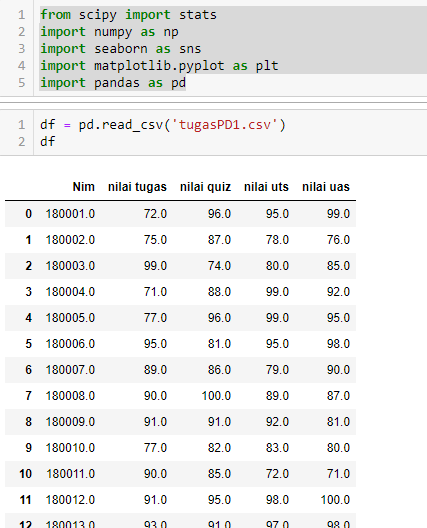/p>
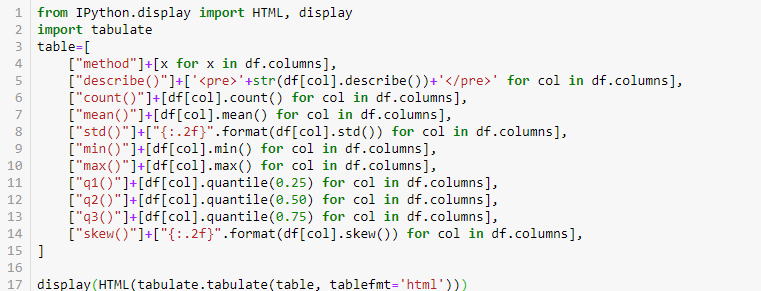
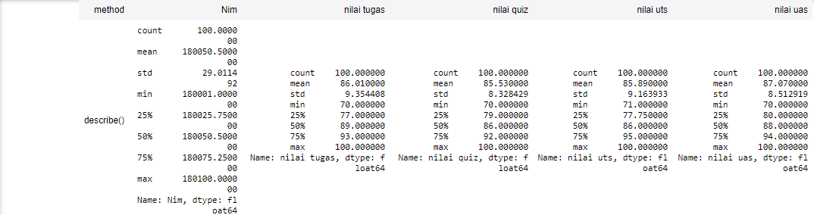
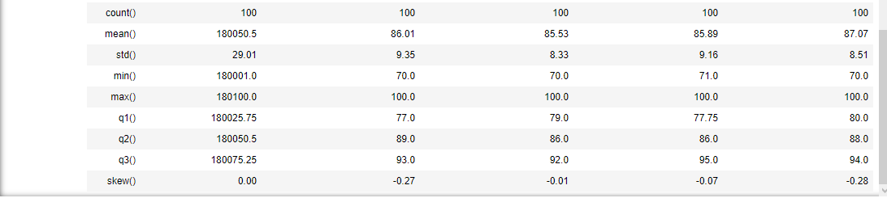
Mengukur Jarak Atribut Binary
Mengukur Jarak Tipe categorical
Overlay Metric
Ketika semua atribut adalah bertipe nominal, ukuran jarak yang paling sederhana adalah dengan Ovelay Metric (OM) yang dinyatakan dengan dimana nn adalah banyaknya atribut, ai(x)ai(x) dan ai(y)ai(y) adalah nilai atribut ke ii yaitu AiAi dari masing masing objek xx dan yy, δ (ai(x),ai(y))δ (ai(x),ai(y)) adalah 0 jika ai(x)=ai(y)ai(x)=ai(y) dan 1 jika sebaliknya.
OM banyak digunakan oleh instance-based learning dan locally weighted learning. Jelas sekali , ini sedikit beruk untuk mengukur jarak antara masing-masing pasangan sample, karena gagal memanfaatkan tambahan informasi yang diberikan oleh nilai atribut nominal yang bisa membantu dalam generalisasi.
Value Difference Metric (VDM)
VDM dikenalkan oleh Standfill and Waltz, versi sederhana dari VDM tanpa skema pembobotan didefinsisikan dengan dimana CCadalah banyaknya kelas, P(c|ai(x))P(c|ai(x)) adalah probabilitas bersyarat dimana kelas xx adalah cc dari atribut AiAi, yang memiliki nilai ai(x)ai(x), P(c|ai(y))P(c|ai(y)) adalah probabilitas bersyarat dimana kelas yy adalah cc dengan atribut AiAi memiliki nilai ai(y)ai(y)
VDM mengasumsikan bahwa dua nilai dari atribut adalah lebih dekat jika memiliki klasifikasi sama. Pendekatan lain berbasi probabilitas adalah SFM (Short and Fukunaga Metric) yang kemudian dikembangkan oleh Myles dan Hand dan didefinisikan.
Minimum Risk Metric (MRM)
Ukuran ini dipresentasikan oleh Blanzieri and Ricci, berbeda dari SFM yaitu meminimumkan selisih antara kesalahan berhingga dan kesalahan asymtotic. MRM meminimumkan risk of misclassification yang didefinisikan.
Mengukur Jarak Tipe Ordinal
Nilai-nilai atribut ordinal memiliki urutan atau peringkat, namun besarnya antara nilai-nilai berturut-turut tidak diketahui. Contohnya tingkatan kecil, sedang, besar untuk atribut ukuran. Atribut ordinal juga dapat diperoleh dari diskritisasi atribut numerik dengan membuat rentang nilai ke dalam sejumlah kategori tertentu. Kategori-kategori ini disusun dalam peringkat. Yaitu, rentang atribut numerik dapat dipetakan ke atribut ordinal ff yang memiliki MfMf state. Misalnya, kisaran suhu atribut skala-skala (dalam Celcius)dapat diatur ke dalam status berikut: −30 hingga −10, −10 hingga 10, 10 hingga 30, masing-masing mewakili kategori suhu dingin, suhu sedang, dan suhu hangat. MM adalah jumlah keadaan yang dapat dilakukan oleh atribut ordinalmemiliki. State ini menentukan peringkat 1,...,Mf1,...,Mf
Perlakuan untuk atribut ordinal adalah cukup sama dengan atribut numerik ketika menghitung disimilarity antara objek. Misalkan ff adalah atribut-atribut dari atribut ordinal dari nn objek. Menghitung disimilarity terhadap f fitur sebagai berikut:
-
Nilai ff untuk objek ke-ii adalah xifxif, dan ff memiliki MfMf status urutan , mewakili peringkat 1,..,Mf1,..,Mf Ganti setiap xifxif dengan peringkatnya, rif∈{1...Mf}rif∈{1...Mf}
-
Karena setiap atribut ordinal dapat memiliki jumlah state yang berbeda, diperlukan untuk memetakan rentang setiap atribut ke [0,0, 1.0] sehingga setiap atribut memiliki bobot yang sama. Perl melakukan normalisasi data dengan mengganti peringkat rifrif denganzif=rif−1Mf−1zif=rif−1Mf−1
-
Dissimilarity kemudian dihitung dengan menggunakan ukuran jarak seperti atribut numerik dengan data yang baru setelah ditransformasi $ z _ { i f }
## Menghitung Jarak Tipe Campuran
Menghitung ketidaksamaan antara objek dengan atribut campuran yang berupa nominal, biner simetris, biner asimetris, numerik, atau ordinal yang ada pada kebanyakan databasae dapat dinyatakan dengan memproses semua tipe atribut secara bersamaan. Salah satu teknik tersebut menggabungkan atribut yang berbeda ke dalam matriks ketidaksamaan tunggal dan menyatakannya dengan skala interval antar [0,0,1.0][0,0,1.0]. Misalkan data berisi atribut pp tipe campuran. Ketidaksamaan (disimilarity ) antara objek ii dan jj dinyatakan dengan
d(i,j)=∑pf=1δ(f)ijd(f)ij∑pf=1δ(f)ijd(i,j)=∑f=1pδij(f)dij(f)∑f=1pδij(f)
dimana δfij=0δijf=0 - jika xifxif atau xjfxjf adalah hilang (i.e., tidak ada pengukuran dari atribut f untuk objek ii atau objek jj)
- jika xif=xjf=0xif=xjf=0 dan
- atribut ff adalah binary asymmetric,
selain itu δfij=1δijf=1
Kontribusi dari atribut ff untuk dissimilarity antara i dan j (yaitu.dfijdijf) dihitung bergantung pada tipenya,
-
Jika ff adalah numerik, dfij=∥xif−xjf∥maxhxhf−minhxhfdijf=‖xif−xjf‖maxhxhf−minhxhf, di mana h menjalankan semua nilai objek yang tidak hilang untuk atribut f
-
Jika ff adalah nominal atau binary,$d_{ij}^{f}=0 $jika xif=xjfxif=xjf, sebaliknya dfij=1dijf=1
-
Jika ff adalah ordinal maka hitung rangking rifrif dan zif=rif−1Mf−1zif=rif−1Mf−1 , dan perlakukan zifzif sebagai numerik.
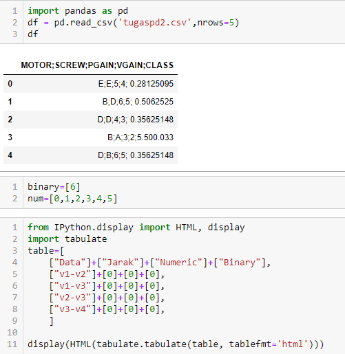
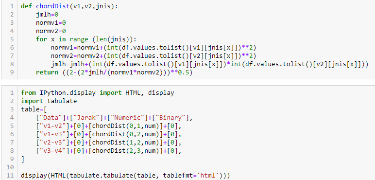
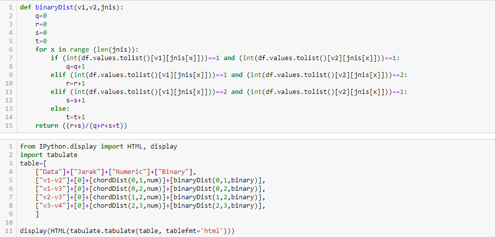
SELECTION FEATURE
Pemilihan (seleksi) data dari sekumpulan data operasional perlu dilakukan sebelum tahap penggalian informasi dalam KDD dimulai. Data hasil seleksi yang digunakan untuk proses data mining, disimpan dalam suatu berkas, terpisah dari basis data operasional.
Entropy Target
-
Entropy (S) merupakan jumlah bit yang diperkirakan dibutuhkan untuk dapat mengekstrak suatu kelas (+ atau -) dari sejumlah data acak pada ruang sampel S.
-
Entropy dapat dikatakan sebagai kebutuhan bit untuk menyatakan suatu kelas.
-
Entropy digunakan untuk mengukur ketidakaslian S.
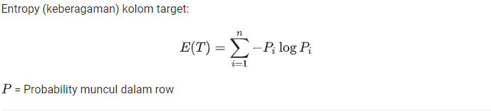
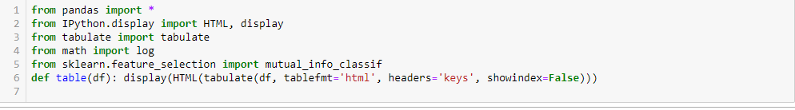
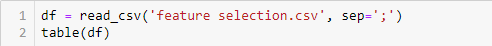
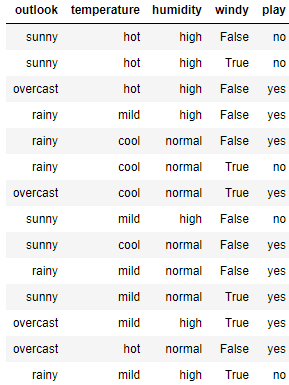
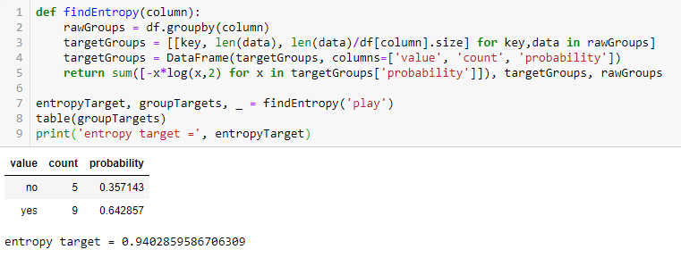
Information GAIN
-
Gain (S,A) merupakan perolehan informasi dari atribut A relative terhadap output data S.
-
Perolehan informasi didapat dari output data atau variable dependent S yang dikelompokkan berdasarkan atribut A, dinotasikan dengan gain (S,A).
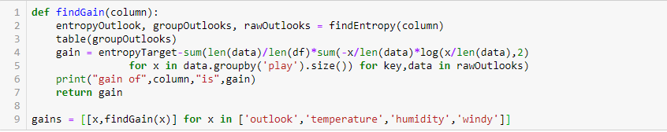
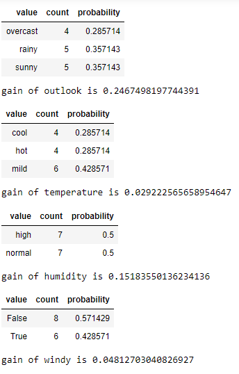
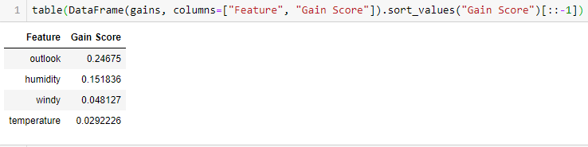